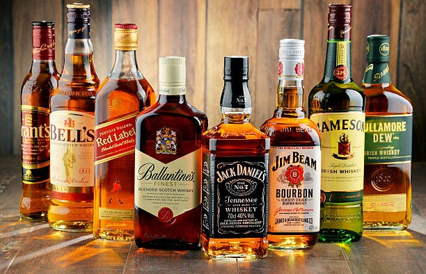

영국 북부에 있는 아일랜드 혹은 스코틀랜드에서 유래한 증류주. 대표적인 증류주이자 숙성주이다. 양주의 대명사이며, 프랑스에서 유래한 증류주인 브랜디와 더불어 가격대가 일반적으로 가장 높은 편에 속한다. 높은 가격대의 이유는 오크통에서 숙성을 시키는 데만도 적어도 수년이 걸려 생산 기간이 길며, 숙성 과정에서 위스키가 증발 되어 양이 줄어들기 때문이다. 다만 칵테일을 주조할 때 기주로는 상대적으로 덜 쓰인다.
위스키45ml디사론노20ml을 섞어서 만든다
버번위스키50ml 스위트 베르무트20ml 비터스1 Dash를 저어서 만든다
버번45ml 탄산수15ml 설탕1tsp 비터 1Dash를 섞어 가니쉬를해 만든다
잭다니엘즈45ml 코카콜라180ml를 섞어서 만든다
원하는위스키45ml 원하는 음료 주로 탄산150ml를 섞어서 만든다
영국 스코틀랜드에서 생산
아일랜드에서 생산
미국에서 생산
단일 증류소에서 제작한 위스키 100%몰트만 이용함
단하나의 오크통에서 나온 위스키를 병입한 제품
다양한 증류소에서 제작한 위스키 단 100%위스키만 블렌디드함
보리를 제외한 곡물로 제작한 위스키
몰트위스키와 그레인위스키를 블렌디드하여 제작한 위스키
호밀51%이상사용
옥수수51%이상사용